PORTFOLIO
英文教材設計與命題作品集
我是紀承緯（Baxter Chi），臺大外國語文學系學生，擔任英文家教，教學對象從國小到高中與成人。這一頁整理我自編的題本、講義與課程規劃，以及實際傳出的訊息截圖；所有材料都是節錄，訊息已遮去姓名等可辨識資訊。
- TOEIC 980
- IELTS 8.0（聽、讀 9.0）
- 學測英文 15 級分
01
教材與命題


02
課程規劃
每位學生都有一份 Google Sheets 規劃表，和家長、學生共用，長期目標拆成每週做得到的量。以下是實際使用中的規劃表截圖：學生姓名已遮去，書名改成通用說法。
國小3
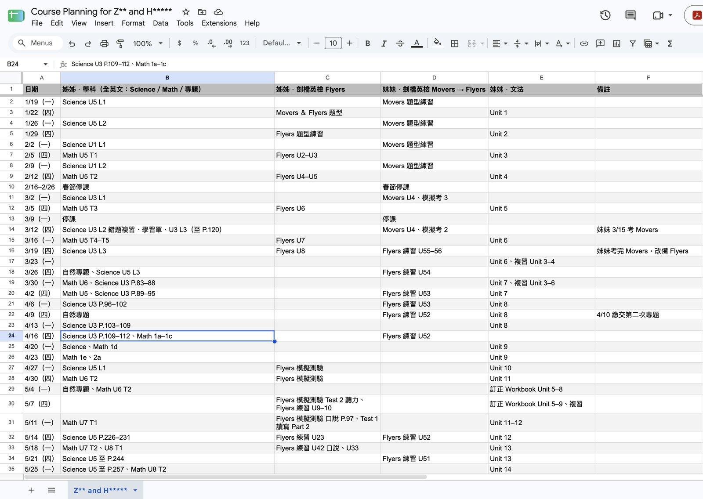
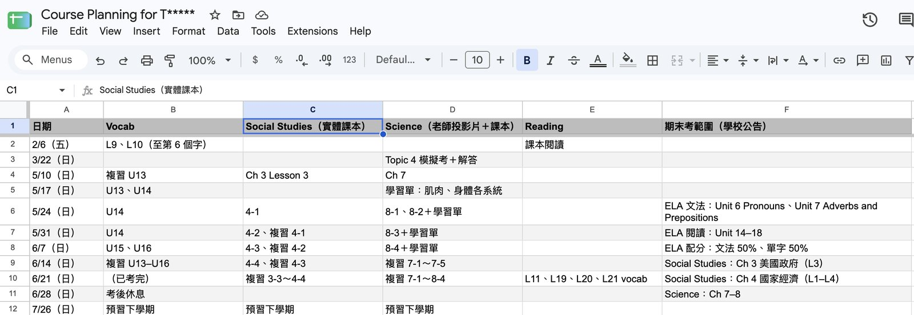
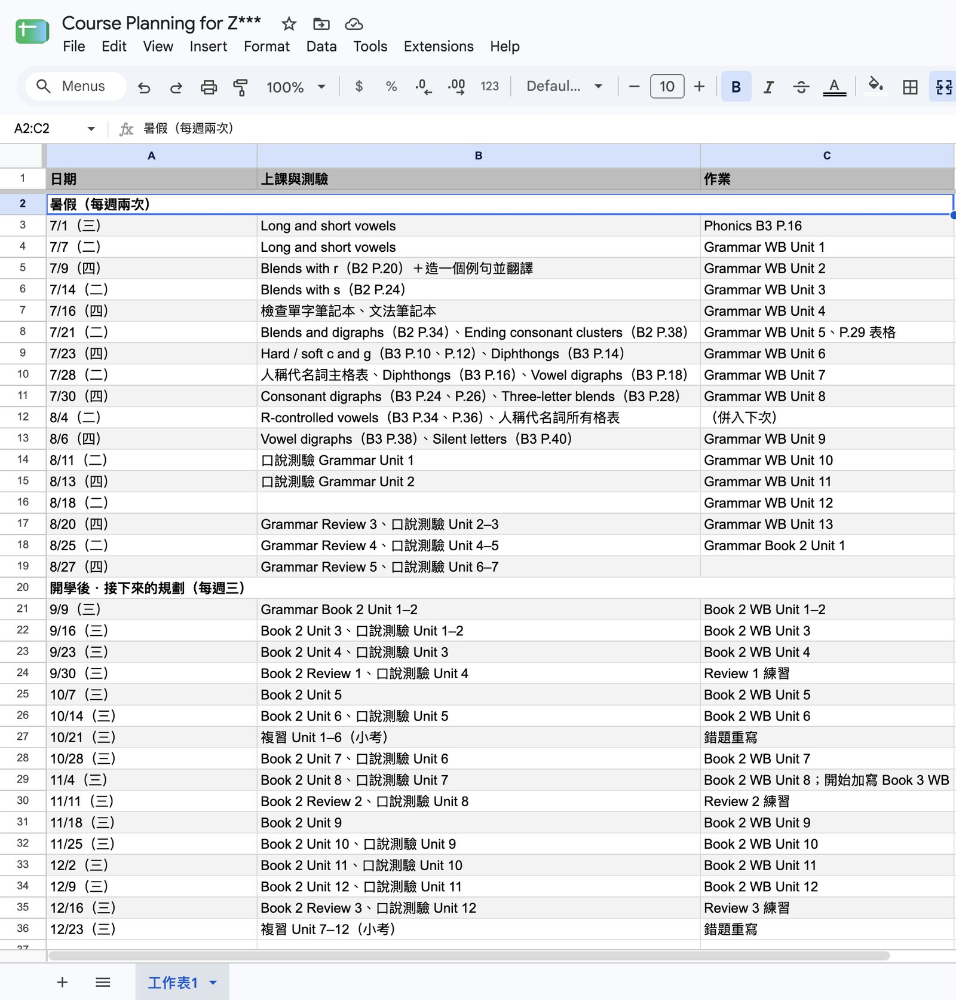
國中1
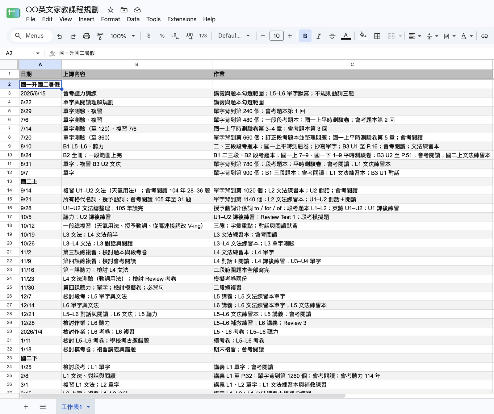
高中1
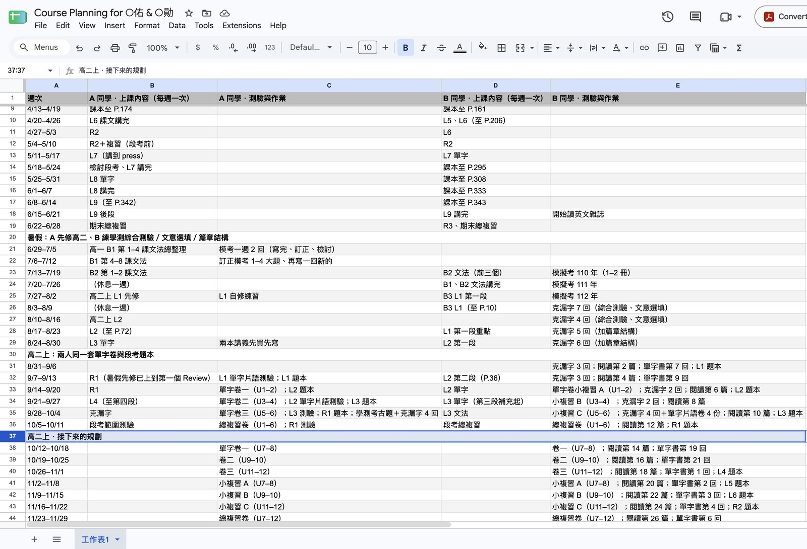
03
家長與學生溝通
實際傳出的 LINE 訊息截圖，只留我送出的訊息。學生姓名以符號代替，書名改成通用說法，其他可辨識的資訊已移除。
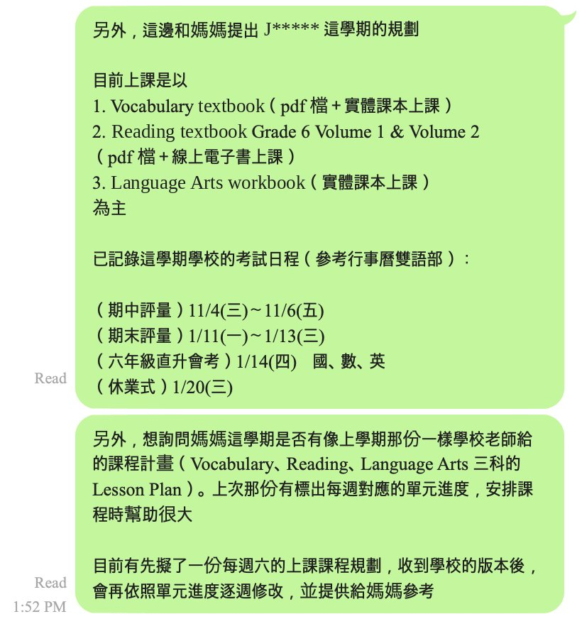
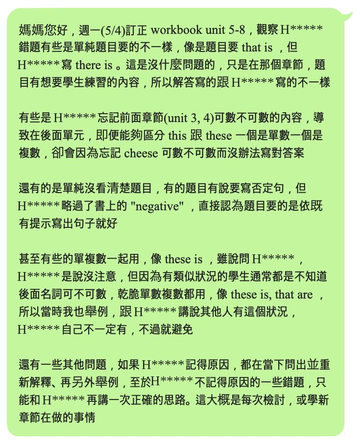


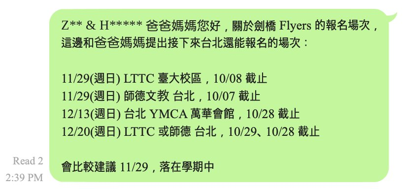
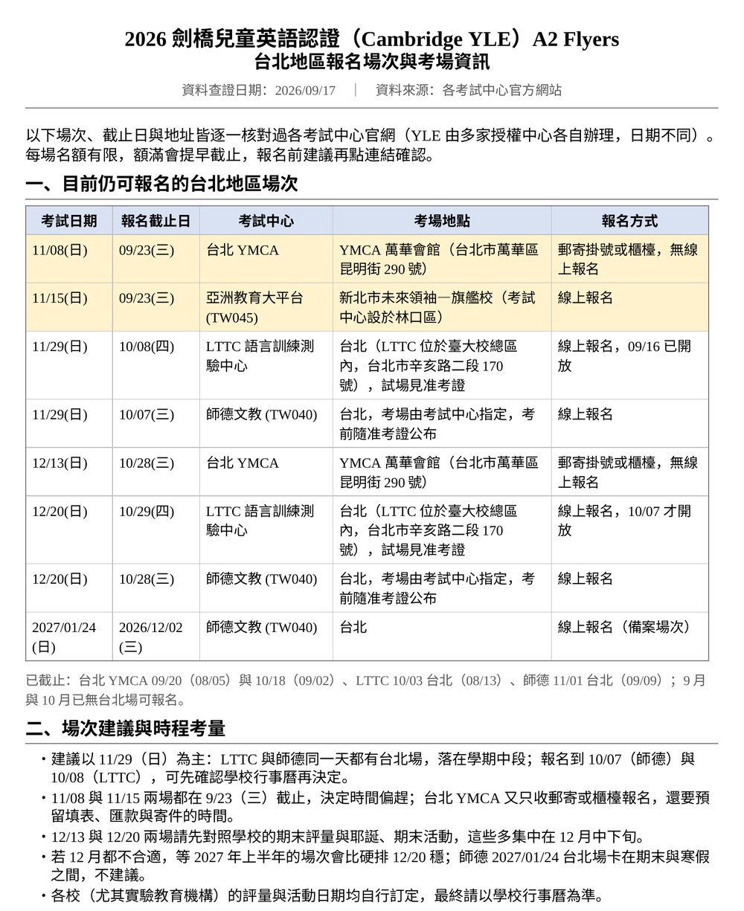
更多訊息與整理4


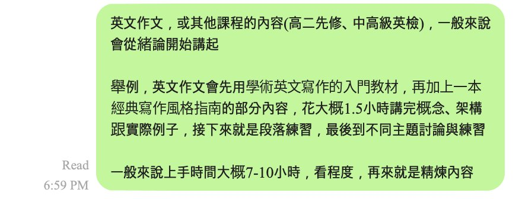
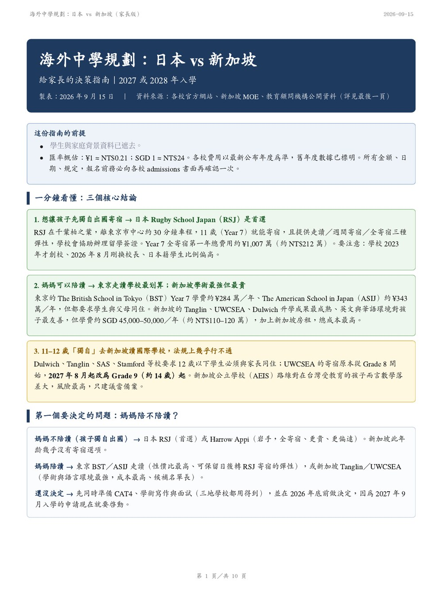